General Information
System Topology
The system offers a wide range of system topologies, so that it can be adapted to an unlimited number of individual requirements. For this reason, this document only provides a description of a general system topology. The topology is valid for Desigo version 6.0.
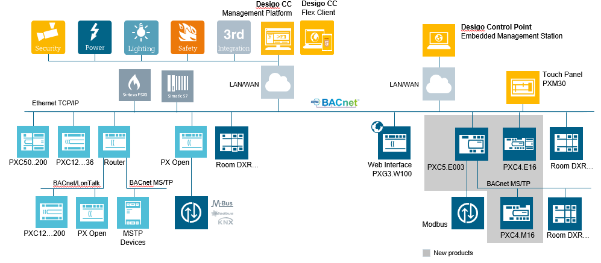
Multiple Languages for Data Import
Automated support for multiple languages is based on the project settings on the System Management Console. The associated languages are imported during import if a project is set up as multilingual. The requirement is that engineering was conducted using SDU standard texts (The System Definition Utility is the tool for creating meta data).
The following example illustrates a standard solution AHU10 in various languages in the System Browser.
Project with four Languages | |||
English | German | French | Russian |
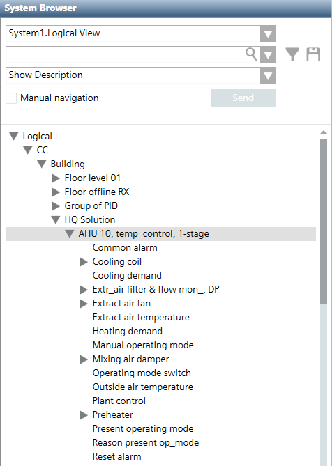 | 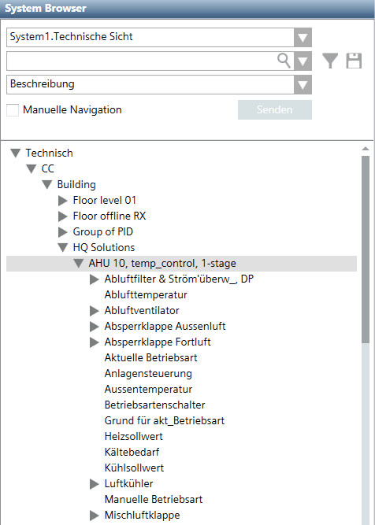 | 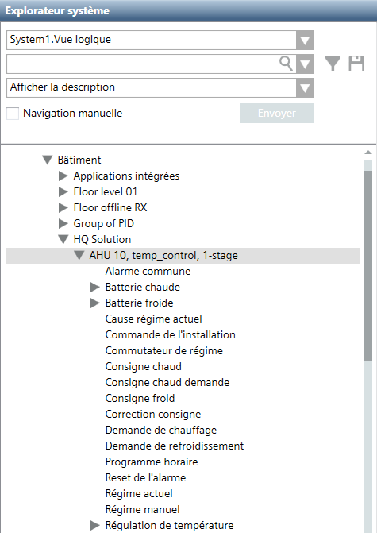 | 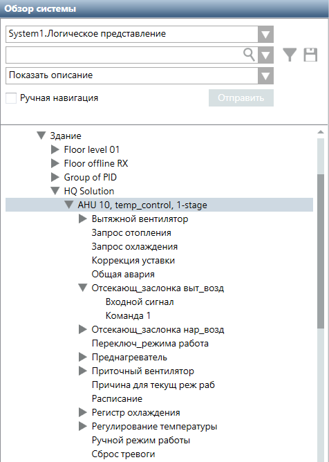 |

NOTES:
− During data import, the period is converted to an underscore; the period is not permitted in the description text.
− Project-specific data point texts, for example: Northeast wing cannot be automatically translated. These text must be translated afterwards using the object configurator.
− Always create a project with an additional language. This permits you to use it as a multilingual project at a later date.
Supported BACnet Object Types
Object Types
The following exported BACnet object types are connected to a Desigo PX automation station:
- Automation Station (Devices): Controls system components and equipment controllers. An automation station samples and processes field data, initiates control actions, communicates with its operators, and generates reports, displays, and warnings.
- Calendars: Defines a list of dates, such as holidays or special events, for scheduling.
- Commands (CMD): An object that writes to a group of object properties through action code(s) inside the Present_Value property. The Command object starts a sequence of actions in the BACnet devices during this write action.
- Counter (ACC): The counter block has one or more number of inputs with value True. If the parameterized number is reached or exceeded, a flag is set.
- Event Enrollment (EE): The management of events for a BACnet system. Events are changes in the value of any property concerning any object that meets specific criteria.
- Event Log (ELOG): Event log objects can be collected on the various automation stations that can be connected to the management platform and then uploaded to the management platform. The collected data are visible in the BACnet Object Browser only.
- HVAC: Various blocks for control of air handling units, heating or cooling coil equipment.
- I/O Objects:
- Inputs: The input block acquires a value from an external data source and converts it to a process value
- Outputs: The output block calculates the present switching value from several, prioritized setpoints (priority array) and transmits the switching value to an external data.
- Loop (LOOP): The Loop block is a universal PID controller (P, PI, PD, or PID), with external tracking. It supplies a modulating manipulated variable.
- Block PID_CTR: Helps create the sequence controller and the sequence cascade controller.
- Notification Classes (NC): Sends event and alarm notifications within a BACnet System.
- Schedules: Acts as a bridge between scheduled times and dates, and the writing of certain values to specific properties and objects concerning the schedule.
- Trend Logs (TLOG): Monitor a property for a specific object. When certain conditions are reached, a log is produced with the property value and a date/time stamp which is placed into a buffer for future retrieval.
- Trend Logs Multiple (TLOGM): A property monitor for different objects. When certain conditions are reached, a log is produced with the property value and a date/time stamp which is placed into a buffer for future retrieval.
NOTE:
The management platform supports Desigo PX proprietary objects.
Dynamic objects
Creating and deleting BACnet objects online provides greater flexibility for adapting projects during operation. The system supports the following dynamic BACnet block types for the Desigo PX automation station.
Dynamic Objects Created in Applications. | |
Object type | Application |
Calendar (CAL) | Schedule |
Event Enrollment (EE) | BACnet Editor |
Notification Class (NC) | BACnet Editor |
Scheduler (Sched) | Schedule |
Trend-Log (TLOG) | Trend |
Trend-Log multiple (TLOGM) | Trend |
Standard and Extended Desigo PX Library
The Desigo PX standard library enables all BACnet properties required for operation and monitoring. There are individual cases where it may be necessary to display all the properties for a BACnet object in Desigo CC. An extended Desigo PX library can be imported for just such cases. The list includes:
- BTL compliance testing
- If customers require that all mandatory and optional BACnet properties are visible on the management platform.
Hierarchies/Views
BACnet objects are depicted hierarchically per the various views:
- Logical View: Displays BACnet data points, aggregators and subpoints that are in the database. The visual layout of these objects is based on the point naming convention (technical designation) of the object.
- User View: Displays the objects as per the user designation of the company. Only objects with a user designation (UD) are displayed. This view is optional and can be populated at import time.
- Application View: Displays various applications such as schedulers, reports, documents, trends, etc.
- Management View: Displays the system view for networks, management functions (server, drivers), system settings (libraries, security, users) and all data points in a Desigo PX automation station.
- User View: Displays customized views of objects or functions. Multiple views can be created.
Different Views to Objects and Functions | ||
Logical | Management | Users |
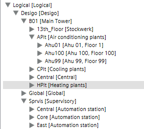 | 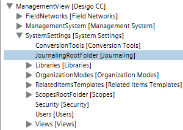 | 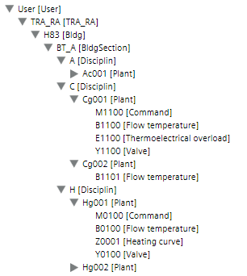 |
Application | User defined |
|
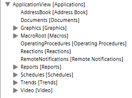 | Structure depend of the project definition. |
|
Offline and Online Data Import
There are two ways to determine the Desigo PX automation station databases:
- Offline data import
- Online data import (BBI upload)
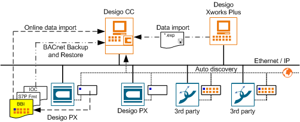
NOTE:
The management platform periodically checks the consistency of the system information against information from room automation station. In case of an inconsistency, you must make an offline or an online data import.
Offline data import
With the import function, you use a file from ABT Site. You typically use this method for new projects, where all of your work—creating graphics, setting up the networks, and so on—is done prior to arriving at the job site (offline commissioning).
Online Data Import
The Online Data Import (BBI upload) uploads BACnet information from the Desigo PX automation station to the management platform. The entire BBI upload process for creating data points includes the functions:
- Upload BACnet data
- Run data import
After a successful BBI upload, the automation station data is available for engineering or operation.
NOTE:
A complete reading of the BACnet object information from the *.EXP file is possible from the Desigo V4. Earlier Desigo versions do not store the *.EXP file on the automation station.
Auto Discovery
With this method, you use the management platform Auto-Discovery feature to set filters and detect your devices on the network, which then display in System Browser. You typically use this method for existing jobs, where automation stations are already installed and online (online commissioning).
Note:
Auto-Discovery creates standard BACnet objects (except for the device and dynamically creatable objects) and is only partially usable for Desigo PX automation stations. This is because Auto-Discovery does not create the proprietary properties for a Desigo PX object. For Desigo PX, use the BBI upload workflow to upload all the descriptive information for a Desigo PX automation station.
BACnet Backup and Restore
BACnet Backup and Restore uploads saved program data (application program) for a BACnet device to the management platform and then restores it as needed to the same or a new BACnet device.
Template Project Information
User Groups in the Template Project
The following user groups are predefined in the system and cannot be changed:
- DefaultAdmins
- DefaultUsers
- FallbackPolicy
- OPCGroup
The template project contains the following preconfigured user groups and rights. They can be changed, deleted, or extended by new user groups:
- Administrators
- Engineering
- Maintenance Grp
- Operators Grp 1
- Operators Grp 2
- Operators Grp 3
Scope Rights
Scope rights define what a user can display or command in his or her project. The template project sets discipline, subdiscipline, object type, and object subtype to All. The write rights (W) and read rights (R) are configured differently and described in the following tables.
Scope rights of user groups: DefaultAdmins, Administrators, Engineering. | |||||||||
Property Groups | Command Groups | Create | Drop | ||||||
Sta. | Con. | Dia. | Own | Sta. | Eve. | Adv. | Own | ||
W | W | W | W | Yes | Yes | Yes | Yes | Yes | Yes |
Scope rights of user groups: DefaultUsers, FallbackPolicy | |||||||||
Property Groups | Command Groups | Create | Drop | ||||||
Sta. | Con. | Dia. | Own | Sta. | Eve. | Adv. | Own | ||
R | R | R | - | No | No | No | No | No | No |
Scope rights of user group: Maintenance Grp | |||||||||
Property Groups | Command Groups | Create | Drop | ||||||
Sta. | Con. | Dia. | Own | Sta. | Eve. | Adv. | Own | ||
W | R | R | - | Yes | Yes | No | No | No | No |
Scope rights of user group: OPCGroup | |||||||||
Property Groups | Command Groups | Create | Drop | ||||||
Sta. | Con. | Dia. | Own | Sta. | Eve. | Adv. | Own | ||
- | - | - | - | - | - | - | - | - | - |
Scope rights of user group: Operators Grp 1 | |||||||||
Property Groups | Command Groups | Create | Drop | ||||||
Sta. | Con. | Dia. | Own | Sta. | Eve. | Adv. | Own | ||
W | R | R | - | Yes | Yes | No | No | No | No |
Scope rights of user group: Operators Grp 2 | |||||||||
Property Groups | Command Groups | Create | Drop | ||||||
Sta. | Con. | Dia. | Own | Sta. | Eve. | Adv. | Own | ||
W | R | R | - | No | No | No | No | No | No |
Scope rights of user group: Operators Grp 3 (Lite user) | |||||||||
Property Groups | Command Groups | Create | Drop | ||||||
Sta. | Con. | Dia. | Own | Sta. | Eve. | Adv. | Own | ||
W | R | R | - | No | No | No | No | No | No |
Application Rights
Application rights specify which application a user can display and configure.
| Application rights of default user groups. Key: X = Display and configure O = Display only Empty = No user rights | ||||||
Application | Administrator | Engineering | Maintenance | Operator Gr1 | Operator Gr2 | Operator Gr3 | |
Notification > Recipient | X | X | X | O | O |
| |
Assisted Event Treatment | X | X | X | X | X |
| |
BACnet Configurator | X | X |
|
|
|
| |
device | X | X | O | O | O |
| |
Document Configurator | X | X | X | X | X |
| |
Document Viewer | X | X | X |
|
| O | |
Driver | X | X |
|
|
|
| |
Graphic editor | X | X | X |
|
|
| |
Graphic Library Editor | X | X |
|
|
|
| |
Graphics Viewer | X | X | X | X | X | O | |
Symbols | X | X |
|
|
|
| |
Import rules | X | X |
|
|
|
| |
Data import | X | X |
|
|
|
| |
Journaling printers | X | X | X | O | O |
| |
Library | X | X |
|
|
|
| |
License | X | X |
|
|
|
| |
Log Viewer | X | X | X | O | O | O | |
Macro | X | X | X | O | O |
| |
Network | X | X | O | O | O |
| |
Object Configurator | X | X | O |
|
|
| |
Operating Procedure | X | X | O | O | O |
| |
Reactions | X | X | O | O | O |
| |
Notification | X | X | O | O | O |
| |
Reports | X | X | X | O | O | O | |
Schedules | X | X | X | X | X |
| |
Scopes | X | X |
|
|
|
| |
Safety & Security | X | X |
|
|
|
| |
Sessions | X | X |
|
|
|
| |
System Management | X | X |
|
|
|
| |
Text Groups | X | X |
|
|
|
| |
Trends | X | X | X | X | X | O | |
Manual Trend Correction | X | X |
|
|
|
| |
Users | X | X |
|
|
|
| |
Video Display | X | X |
|
|
|
| |
Video wall | X | X |
|
|
|
| |
Video Configurator | X | X |
|
|
|
| |
Video PTZ | X | X |
|
|
|
| |
Views | X | X |
|
|
|
| |
View Configurator | X | X |
|
|
|
| |
User Profile in the Template Project
The following users are predefined in the system and cannot be changed:
Preconfigured System Users | |||
Users | Password | User Group | Client Profile |
DefaultAdmin |
| DefaultAdmins | Default |
GmsDefaultUser |
| DefaultUsers | Default |
root |
|
| Default |
User Profile Response between Server and Client
The user profile specifies the number of alarm buttons in the Event bar. The corresponding discipline profiles as well as the default profile can be selected from the template project. The user profile can be defined in the server or at the corresponding user, whereby the server has higher priority (see table below).
User profile settings. | ||
Servers | Users | Used actively |
empty | Default | Default |
empty | BA_EN | Default |
Default | Default | Default |
Default | BA_EN | Default |
BA_EN | BA_EN | BA_EN |
BA_EN | Default | BA_EN |
h,x diagram for ventilation plants
General
The psychrometric diagram is either an h,x or t,x diagram with t representing the temperature [°C], h enthalpy [kJ/kg] and x [g/kg] for the absolute water content of the air. The psychrometric diagram for humid air graphically displays air states and changes in states that are an integral part of climate technology.
Additional information on the h,x diagram is available at:
- German RSS feed link:http://www.buildingtechnologies.siemens.com/download-center/Default.aspx?mandator=ic_bt&segment=HQ&pos=rss&fct=search&search_str=0-91899-de&datapool=mixed&sortcolumn=&sortorder=ascending&displayfiltercolumn=&displayfiltervalue=&languagefilter=de - German&languagefilter_default=en - English&segmentfilter=hq,nl&segmentlanguagefilter=&treeid=&language=en&fquery=&id1list=&
- English RSS feed link: http://www.buildingtechnologies.siemens.com/download-center/Default.aspx?mandator=ic_bt&segment=HQ&pos=rss&fct=search&search_str=0-91899-en&datapool=mixed&sortcolumn=&sortorder=ascending&displayfiltercolumn=&displayfiltervalue=&languagefilter=en - English&languagefilter_default=en - English&segmentfilter=hq,nl&segmentlanguagefilter=&treeid=&language=en&fquery=&id1list=&
Application
An h,x diagram can be created for all ventilation plants that have humidity and temperature control. A replacement value of 50% is assumed on ventilation plants that do not have all humidity components available.
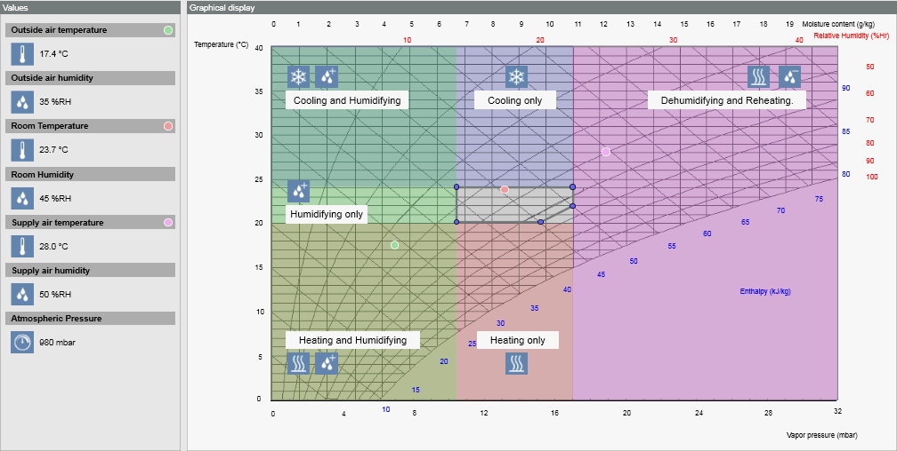
Datapoints for the h,x diagram | |||||
Description | Name | Function | Required | Alternative | Replacement value |
Outside air temperature | TOa | SensorOutsideTemperature | Yes |
|
|
Supply air temperature | TSu | SensorAirTemperature | Yes |
|
|
Room temperature | TR | SensorRoomTemperature | Yes/optional | TEx |
|
Extract air temperature | TEx | SensorRoomTemperature | No |
|
|
Outside air humidity | HuOa | SensorOutsideHumidity | Optional |
| 50% |
Supply air humidity | HuSu | SensorAirHumidity | Optional |
| 50% |
Room humidity | HuR | SensorRoomHumidity | Optional | HuEx | 50% |
Extract air humidity | HuEx | SensorRoomHumidity | Optional |
| 50% |
Setpoint heating | SpH | SetpointTempHeating | Optional | SpField.SpH | 20 |
Setpoint cooling | SpC | SetpointTempCooling | Optional | SpField.SpC | 24 |
Setpoint humidity | SpHu | SetpointHumidity | Optional | SpField.SpHu | 30 |
Setpoint dehumidification | SpDhu | SetpointDehumidification | Optional | SpField.SpDHu | 60 |
Setpoint humidity absolute | SpHuAbs | SetpointHumidityAbs | Optional | SPField.SpHuRAbs | 11 |
Atmospheric pressure | AtmP | SensorOutsidePressure | Optional | SPField.AtmP | 980 |
NOTE:
For the h,x diagram to operate correctly, the names for SpH, SpC, SpHu and SpDhu must be available and cannot be changed in the application program.
List Sequence on the Lite User Interface
The list sequence determines the sequence of the symbols on the lite user interface.
List sequence | ||
Number | Application | Comment |
0 |
| Alphabetical sequence within the same value |
0001 | Graphic |
|
0100 | Subsystem schedules | Must be configured |
0200 | Subsystem calendar | Must be configured |
0400 | Subsystem trends | Must be configured |
0700 | Trend definition | Disabled by default |
0800 | Log Viewer | Disabled by default |
0900 | Report definition | Disabled by default |
1000 | Documents | Disabled by default |
1200 | RENO recipient | Disabled by default |
1300 | RENO procedures | Disabled by default |